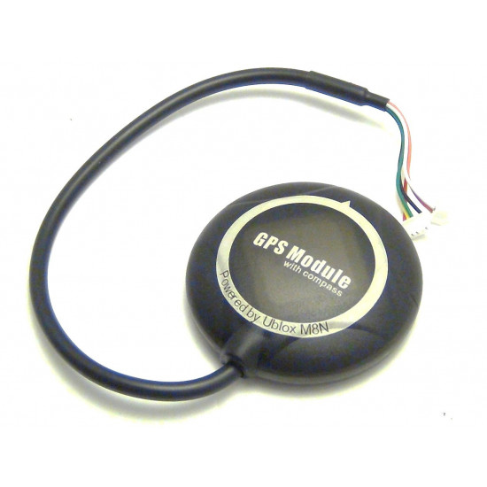
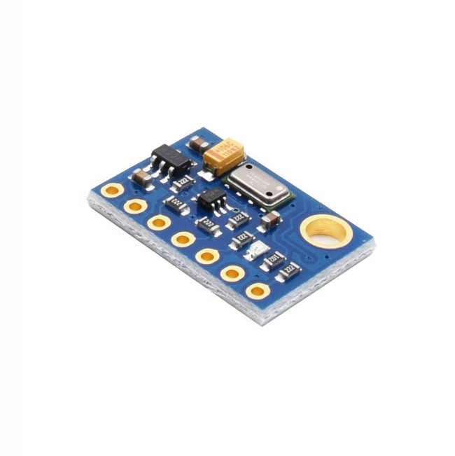
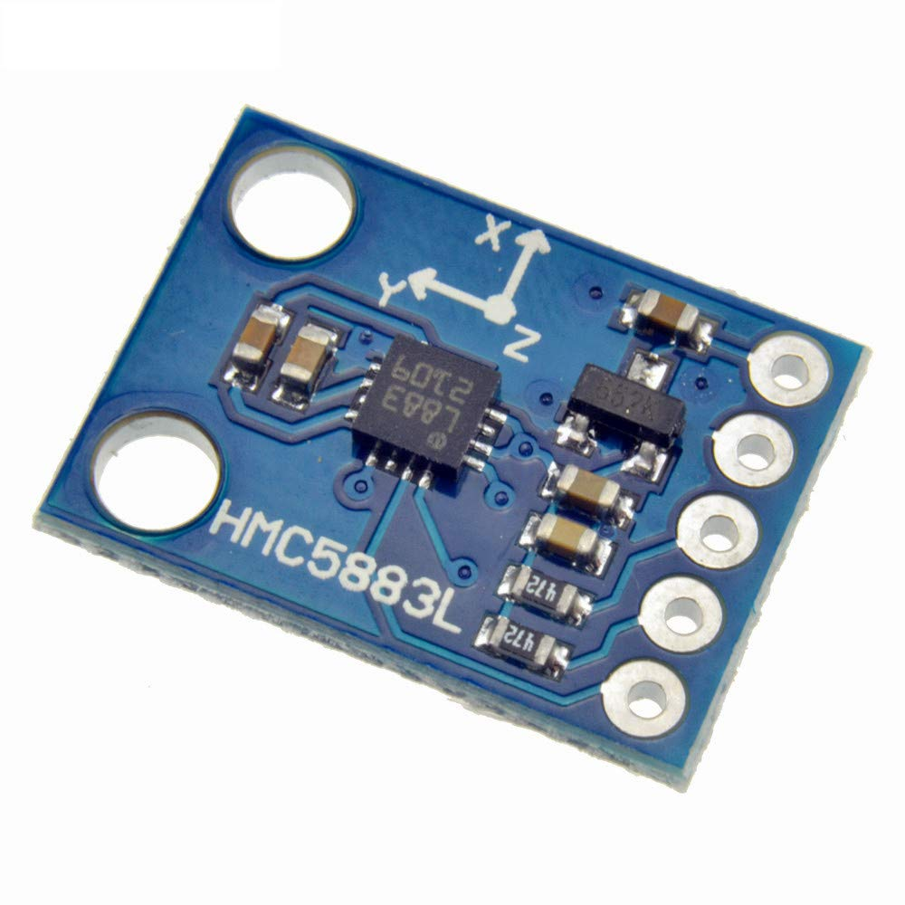

The aim of this project is to develop a stable and reliable 3D navigation system which would be utilized by drones in precise autonomous missions. In order to find reliabe and trustworthy data we need to combine 5 diferent sensors.
GPS

The gps modules are not really precise, but they are useful in correcting the mesurements made by other sensors in largers traveled distances. They are also very convenient to get the initial absolute position. Currently I'm using Ublox m8n gps.
IMU
The accelerometer is used to calculate acceleration, and then integrated 2 times to get relative position. The Gyroscope is fused with accelerometer to get the angle and then combined with relative position to achive a very precise position data. Currently I'm using MPU6050 sensor.
Barometer

The Barometer mesures air pressure and with a simple calculation we can know the relative altitude with a lot precision, therefore its data only affects the z axis. Currently I'm using MS5611 sensor.
Digital Compass

The Magnatometer is used to determine where the drone is looking in terms of direction. With this information it is possible to better calculate a path for an autonomous mission. Currently I'm using HMU sensor.